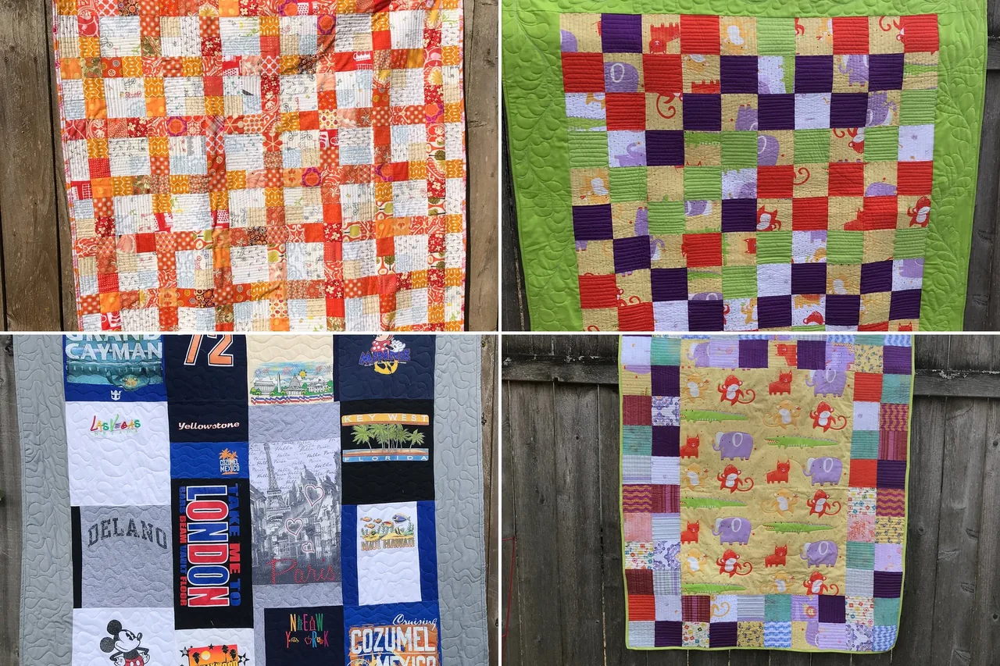
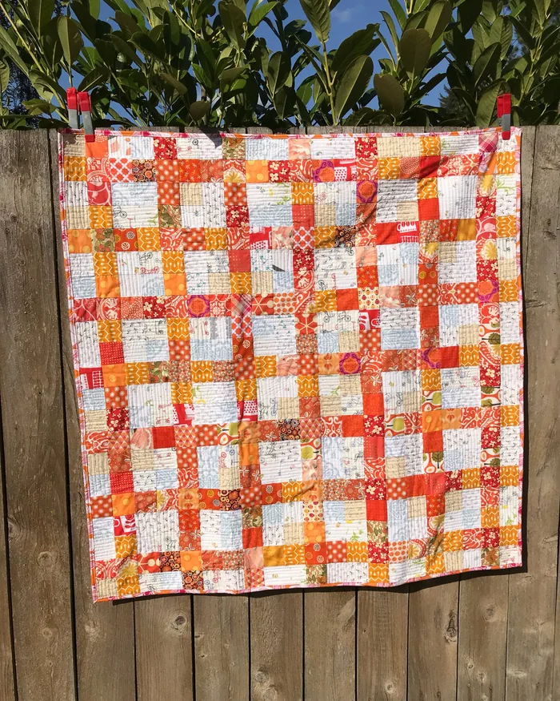
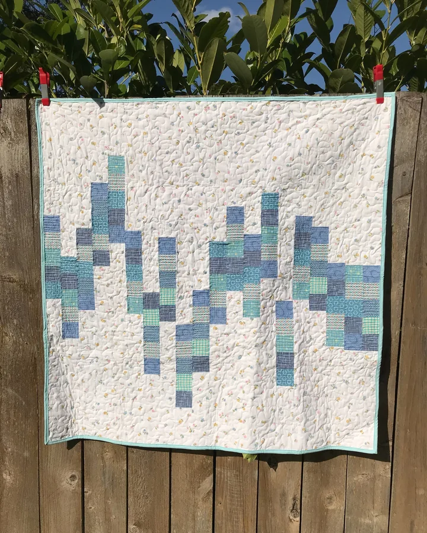
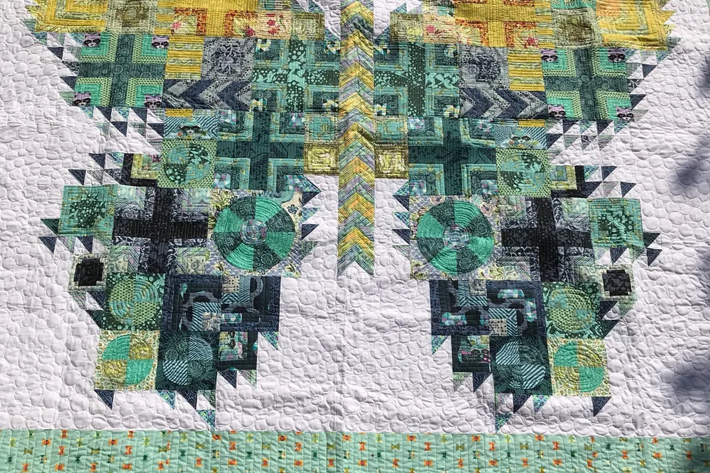
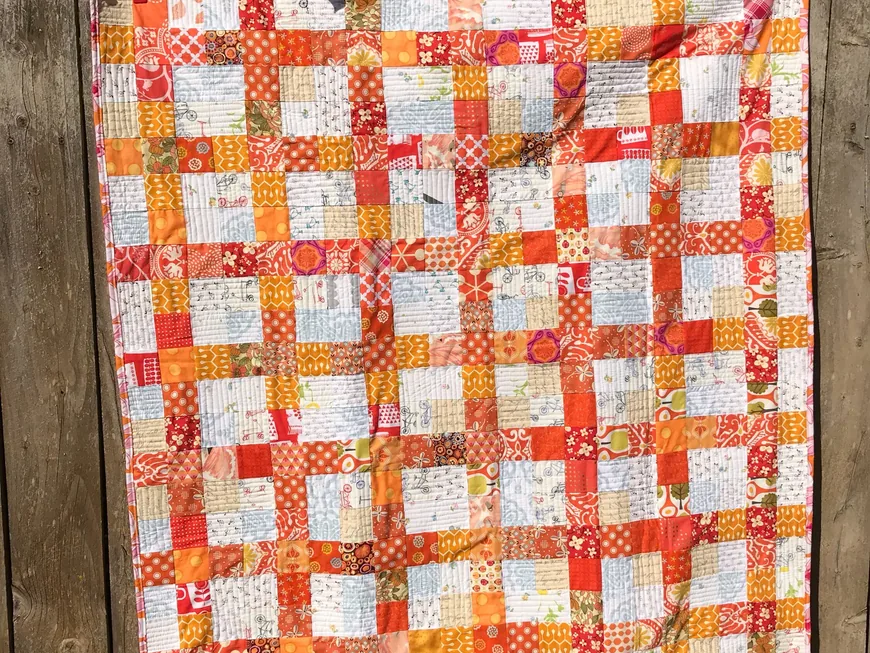
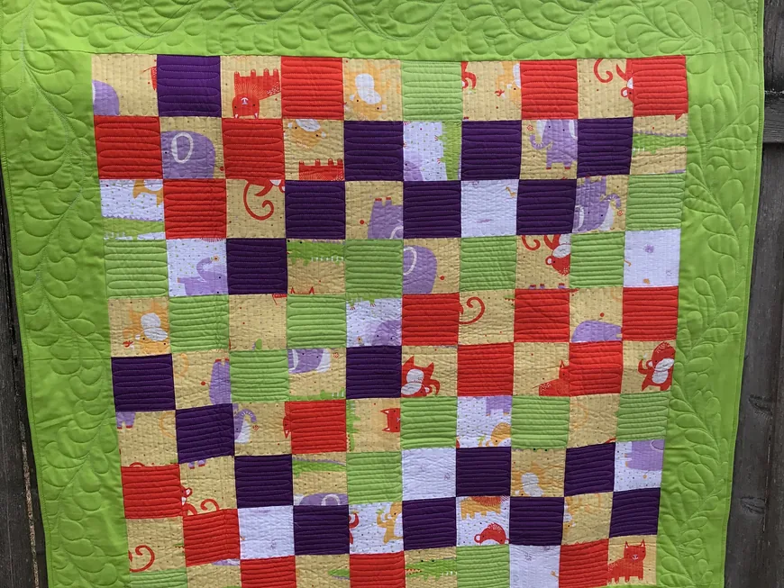
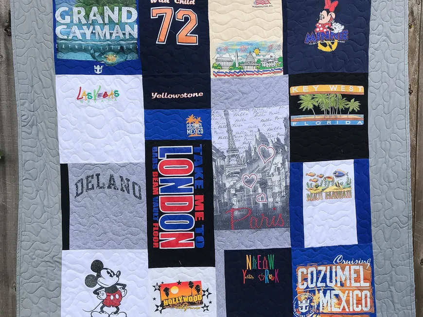
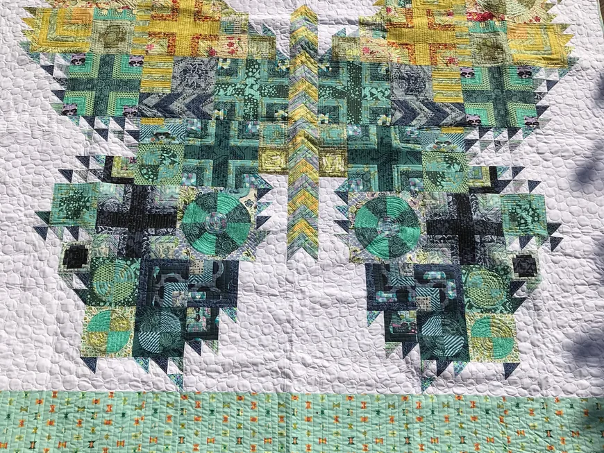

Colorful
Bright prints and happy scraps.

Quilter & sewist · Spokane, Washington
Sewn goods that add color and joy to every day.

Meet the Artist
Owner & artist of Sewtropolis
I started sewing at a very early age. I think I was 9 when I began sewing by hand, and as I got older I would sneak in and use my mom's sewing machine when she wasn't around.
Handcrafted sewn goods designed to add color & joy to your everyday life.
Our story

01 How it started
I'm self taught, and over time I've made my own clothes and home furnishings. Once I started having kids I sewed for them, and even sewed things for my animals.
About 20 years ago I discovered quilting and fell in love with it. I've made quilts for all my family and friends, and am still going strong! To me quilting is relaxing and meditative, and I enjoy seeing each quilt come together from idea to final stitch.
Every once in a while I'll explore making other items such as bags, pot holders and pillows. Besides sewing and quilting I love to knit socks and crochet, mainly hats and dish cloths. That's me in a nutshell!
— Nikol
02 Where & how it’s made
From scrap quilts and baby quilts to quilted jackets and hoodies, Nikol sews every piece herself, and she’s happy to talk about special orders, like a quilt made from your own T-shirts.

03 What makes it special
Bright prints and happy scraps.
Sewn by Nikol in Spokane.
Special orders and T-shirt quilts.
Reviews
What we make
Scrap quilts, organic cotton baby quilts, custom T-shirt quilts, potholders and zippered pouches. Here is what you will find in the shop.

Bright, cheerful scrap quilts pieced from vintage and modern prints.

Organic cotton patchwork baby quilts.

Your favourite T-shirts sewn into a quilt to keep.

Bold pattern quilts like the Tula Pink butterfly.
Everything is sold through the online shop, with secure checkout and buyer protection.
Stay in the loop
Sign up to be the first to know about sales and new products.
You’re in! 🎉
Continue to the shopSewn in Spokane, Washington. Follow along on Instagram for new quilts and makes!
Visit the shop